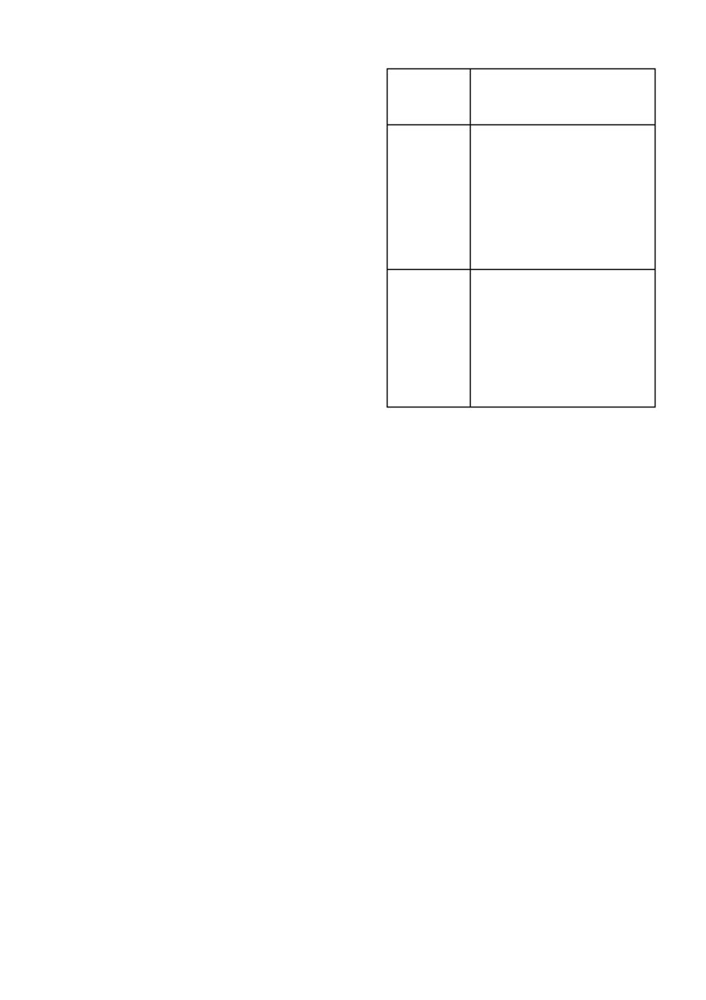

SERVIAN
/ 3
•
Indien
SERVIAN
toedienings gevolg word deur ‘n droë
periode en dan weer ‘n nat periode later in die seisoen, mag
hergroei van die uintjies plaasvind.
6.1
VERENIGBAARHEID
Die verenigbaarheid van
SERVIAN
met ander produkte kan
beïnvloed word deur die formulasie van die betrokke produkte
asook deur die kwaliteit van die water. Aangesien die formulasie
van produkte kan verander sonder die medewete van Syngenta
en die kwaliteit van die water ook van plaas tot plaas kan varieër,
moet ‘n fisiese verenigbaarheidstoets altyd uitgevoer word voor-
dat gespuit word.
SERVIAN
is verenigbaar met COMPLEMENT SUPER (L8169),
BREAK-THRU (L5895), GARDOMIL
®
GOLD (L6264), METAGAN
GOLD (L5748), TOPIK (L4250), SORGOMIL
®
GOLD 600 SC
(L5897), TRALATE
®
(L5100), GESAPRIM
®
SUPER (L3914),
SENCOR
®
480 SC (L3034), GESAPAX
®
500 SC (L2784),
FALCON
®
GOLD (L5750) en VELPAR
®
240 SL (L3696).
Moet nie
SERVIAN
saam met
atrazine, parakwat, 2,4-D of
bromoksinil
toedien nie.
Die toedieningswater waarmee
SERVIAN
gemeng word, behoort
nooit onder ‘n pH van 6 te wees nie. Die oplosbaarheid van
SERVIAN
vermeerder meer as 100 maal by pH 7 vergeleke met
pH 5. Moet dus nooit benatters, versuurders of buffers gebruik
wat die pH onder 6 sal laat daal indien
SERVIAN
gebruik word
nie. Die gebruik van suiwer ammoniumsulfaat bronne soos
Velocity-Glifo (L7768) teen 1 % - 2 % dosis word aanbeveel.
Velocity-Glifo bevat slegs ammoniumsulfaat wat nie die pH
be tekenisvol sal verlaag nie.
Moet nie
SERVIAN
in mengsels saam met ander onkruid doders,
swamdoders, insekdoders, kunsmis of ander chemikalieë toedien
wat nie op hierdie etiket aanbeveel word nie.
6.2
MENGINSTRUKSIES
SERVIAN
is ‘n waterdispergeerbare korrelonkruiddoder wat
maklik met water meng indien die volgende menginstruksies
nagekom word:
•
Vul die spuittenk kwart- tot halfvol met water.
•
Voeg die benodigde hoeveelheid ammoniumsulfaat by (indien
nodig.
•
Begin die roering.
•
Voeg die benodigde hoeveelheid benattingsmiddel by.
•
Voeg die verlangde hoeveelheid
SERVIAN
direk by in die
spuittenk sonder om dit vooraf te verroom.
•
Hou aan met roer terwyl die tenk vol water gemaak en terwyl
gespuit word.
•
Gebruik
SERVIAN
spuitmengsels binne 24 uur aangesien die
effektiwiteit mag verminder vanweë produkafbreking.
Roer
deeglik voor hergebruik.
TOEDIENINGSHOEVEELHEDE
Grondtoediening
SERVIAN
kan toegedien word met enige medium- of hoë volume
spuittoerusting wat met ‘n doeltreffende roermeganisme toegerus
is en wat goeie bedekking en eweredige verspreiding verseker.
Die beste resultate word verkry deur van platwaaierspuitpunte
gebruik te maak en ‘n minimum spuitvolume van 200 - 400
l
/ha
water toe te dien.
TABEL 1:
Toedieningshoeveelheid van SERVIAN
•
Raadpleeg die
SORGOMIL GOLD 600 SC, GESAPRIM
SUPER en GARDOMIL GOLD
etikette vir vedere besonder-
hede.
•
Gebruik die produkte in die gewasse soos aangedui op die
geregistreerde etikette van
SORGOMIL GOLD 600 SC,
GESAPRIM SUPER en GARDOMIL GOLD.
•
Gebruik COMPLEMENT SUPER (100 m
l
/ha) of BREAK-THRU
(0,05% v/v) by die spuitmengsel.
Ander byvoegmiddels by
SERVIAN
mag lei tot 5 - 10 % swakker
Cyperus
spp. beheer.
•
Twee toedienings van
SERVIAN
mag nodig wees om laatont-
kiemende uintjies te beheer.
•
Om die beste resultate te verkry, moet
SERVIAN
toegedien
word op aktiefgroeiende
uintjies
onder vogtige toestande 3 -
5 weke na plant nadat die meeste uintjies ontkiem het, maar
voordat hulle begin blom.
Indien vroeër toegedien, mag daar
nog uintjies ontkiem na toediening.
Latere toedienings wan-
neer die uintjies blom, sal ook swakker resultate tot gevolg hê.
•
Tyd van toediening word hoofsaaklik deur die ontwikkeling-
stadium van die uintjies bepaal.
Breëblaar onkruide moet
egter nie groter as die 4-blaar stadium of 100 mm in hoogte
wees nie.
•
Indien ‘n skoffelbewerking deel is van die normale praktyk
moet dit verkieslik 2 - 7 dae na die
SERVIAN
toediening
ge skied.
•
Onkruide wat oorskadu word deur ander onkruide of die
gewas sal a.g.v. onvoldoende bedekking nie beheer word nie.
Dit moet in gedagte gehou word met die tyd van toediening.
•
Die graad en die duur van beheer sal afhang van die onkruid-
grootte, groeitoestande gedurende en na die toediening,
grond pH (H
2
0) en reënval.
•
Opvolgbespuitings mag nodig wees vir die beheer van
uintjies in grasperke.
7. SKOONMAAK VAN SPUIT
Om skade aan ander gewasse te voorkom, moet alle spore van
SERVIAN
dadelik na toediening deeglik uit die meng- en spuit-
toerusting verwyder word deur as volg te werk te gaan:
•
Dreineer die sisteem geheel-en-al.
Spoel tenk deeglik met
skoon water terwyl geroer word en spuit die spoelwater deur
spuitpunte uit.
Dreineer die sisteem weer.
•
Hervul die spuittenk met skoon water tot ongeveer 15 - 20 %
van die tenkvolume en spoel binne-oppervlak van die tenk
deeglik.
•
Voeg 1
l
natriumhipochloriet (5,2 %) per 200
l
water by terwyl
geroer word.
Spuit spoelwater deur spuitpunte vir ongeveer
1 minuut.
Laat die oorblywende spoelwater vir ‘n minimum
van 5 - 10 minute in die spuitsisteem sirkuleer.
Gewas
en
onkruid
teiken
Cyperus
spp.in
avokados,
graansorghum,
gras perke.
(kikuyu en
Cynodon),
koring,
mangoes,
mielies,
sitrus,
suikerriet,
tabak.
Cyperus
spp.
plus breëblaar-
onkruide in
mielies.
Toedieningshoeveelheid produk / ha
(‘n benattingsmiddel soos geregistreer
moet te alle tye by
SERVIAN
spuitmengsel gevoeg word)
50 g
SERVIAN
50 g
SERVIAN
plus
of
GESAPRIM SUPER (1
l
/ha)
of
GESAPRIM SUPER (1
l
/ha) +
SORGOMIL GOLD 600 SC (1
l
/ha)
of
GESAPRIM SUPER (1
l
/ha) +
GARDOMIL GOLD (1
l
/ha)
of
1,5 - 2,9
l
/ha GARDOMIL GOLD
